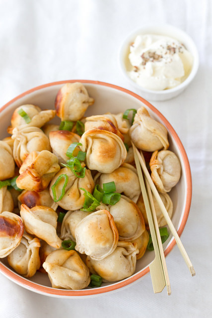

Pelmeenid on toit, mis koosneb õhukestest täidisega tainatükkidest ja mida
enamasti süüakse keedetult või praetult.
Pelmeene ja vareenikuid peetakse vene, ukraina ja teiste slaavi
rahvaste rahvustoiduks.
Rohkem informatsiooni siin!

| Pelmeenid | Keedetud | Praetud |
|---|---|---|
| Rakvere pelmeenid | Hea | Super |
| Rimi pelmeenid | Halb | Enam-vähem |